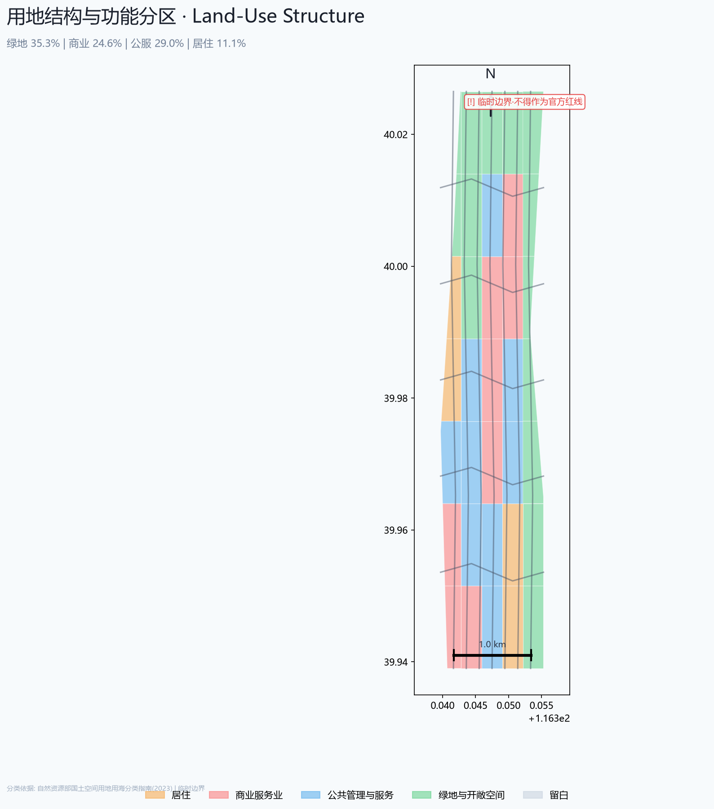
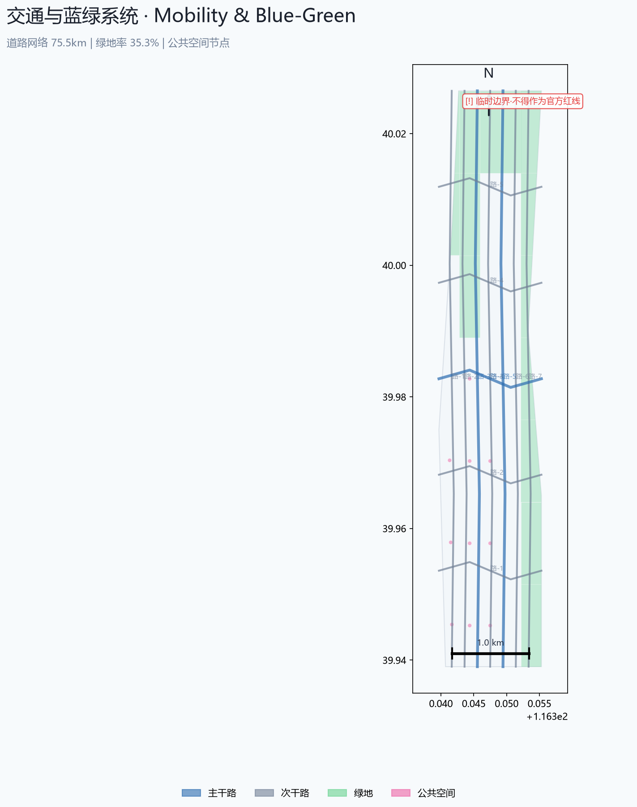

场地总览

核心指标
11.4 km²
总体设计面积
置信度: medium · 临时边界
~24.6%
绿地率
置信度: medium · AI分配
~0.4%
公共空间比例
置信度: low
3
重点区域
置信度: medium · 官方公告
0%(混合承载)
产业研发用地
置信度: medium
~24.6%
商业服务用地
置信度: medium
用地结构与功能分区

重点区域详细设计

交通与蓝绿系统

指标证据与分期实施

自检覆盖
确定性验证PASS
空间审查PASS
视觉打包PASS
证据审查PASS
用地拓扑PASS
边界标注PASS
公众合规PASS
数据诚实PASS
任务完成度
| 公告设计任务 (1.3-1.5) | 23/23 | |
| Agent任务 (agent.1-6) | 6/6 | |
| 强制性专业标准 | 5/5 | |
| 设计深度条目 | 15/16 |
数据来源与假设
| 类型 | 数量 | 状态 |
|---|---|---|
| 正式来源 | 7 | 已记录 |
| 关键假设 | 10 | 已记录 |
| 临时边界 | 4 | 待替换 |
| 数据缺口 | 3 | 待补充 |
六大 Agent 任务概览
| 任务 | 内容 | 状态 |
|---|---|---|
| agent.1 | 命名体系·Logo方向·三定位五功能·空间结构图·三区两翼协同 | OK |
| agent.2 | 5个全球案例·创新生态图谱·众智园全栈体系·产业空间映射 | OK |
| agent.3 | 10张场景卡·3个测试场景·5类用户画像·场景-空间-运营矩阵 | OK |
| agent.4 | 京张遗址公园AI公共空间·东西缝合·4个AI朝圣地标·荣誉展示体系 | OK |
| agent.5 | 百年京张文化+中关村创新文化+AI新文化三层叙事·导视标识体系 | OK |
| agent.6 | 年度活动体系·品牌IP·开发者社区运营·场景开放·国际传播·招引转化 | OK |